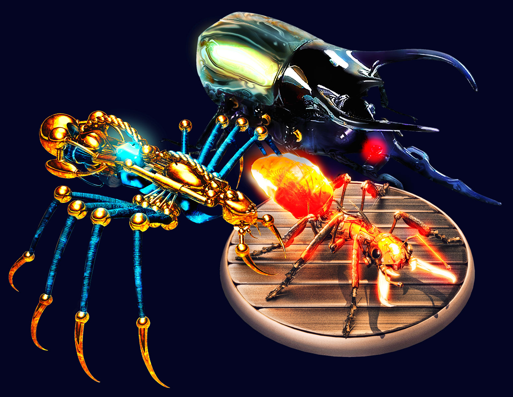

O que são Anoobots?
Anoobots é o miscelânea entre conceitos cibernéticos e biológicos. Suas funções se aplicam e são divididas nos principais conceitos encontrados na natureza (mimetização, policromia, sintetização ao ambiente e por fim a tão sonhada invisibilidade). Essas funções seriam inviáveis para um único robô objeto por isso foram divididas em três “boots”.
Aracn = Seu design foi inspirado em aranhas e com isso atende aos padrões biológicos com suas teias. As teias das aracns são responsáveis por quaisquer mudanças tonais, ou seja, com suas teias infiltradas na própria estrutura das paredes. Imagine em sua casa a possibilidade de poder trocar as cores, texturas, torna-la em vidro.
Antium = Inspirado em formigas, as antiums conseguem sustentar a colônia,traremos esse conceito à cibernética de tal forma que elas por si só conseguem reparar e até construir boots a partir do reestruturação molecular.
Albubas = Esses besouros remontam à força dos besouros, seu nome foi inspirado no idioma bósnio e é responsável por toda a parte física do processo, seja para abertura de espaço para Aracns ou Antiuns, os Albubas também têm a capacidade de quebrar em moléculas o metal dos Anoobots tanto para sua reutilização tanto para conversão em biometal.